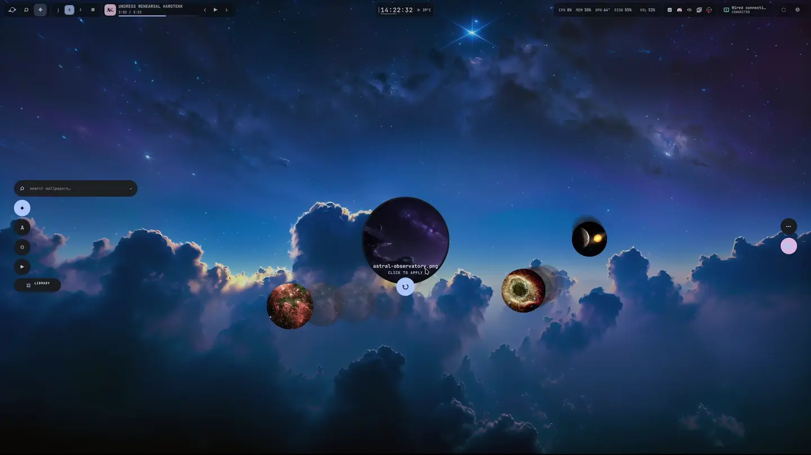

← THE INSTRUMENT DECK03 / 05
Parallax
Choose what sits behind your desktop.
Browse your wallpapers, preview them, and apply one when you are ready.

THE WALLPAPER ORBITBrowseKeep local wallpapers and the included observatory collection together.
PreviewCheck a wallpaper before you make it the new background.
ApplyChange the view from the bar or from the Ephemeris library.
INSIDE PARALLAXA place for
Explore the source ↗A place for
the details.
Wallpaper library
Browse the images you already keep in your wallpaper directory alongside included art.
Safe preview
See a wallpaper at full size before applying it to the current output.
Output aware
Choose the display that should receive a wallpaper when you use more than one monitor.
Quick access
Open Parallax from the launcher or the Aperture launcher island.
PUT IT TO WORK
Yours to operate.
After installing Tonantzintla, open it from the shell or your terminal.
Get Tonantzintla ↗$ mkdir -p ~/Pictures/Wallpapers $ blackhole open walls